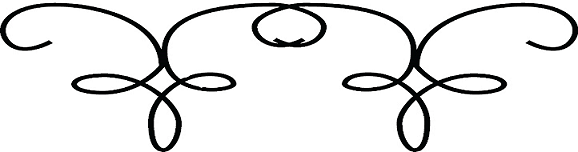

Foto klub Cerkno ima sedež v Cerknem. Šteje preko trideset članov in od tega jih dvajset zelo aktvnih. Član foto kluba Cerkno sem tudi sam že od štirinajstega leta naprej. Vsako leto Foto klub Cerkno priredi razstavo od enega izmed članov najrazličnejših tem. Vsake dve leti pa mednarodni natečaj Maska. Letos je bil to že enajsti natečaj take vrste v Cerknem.
Več o fotoklubu pa tukaj.

Na vrh ▲